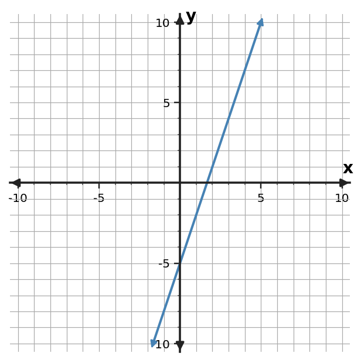
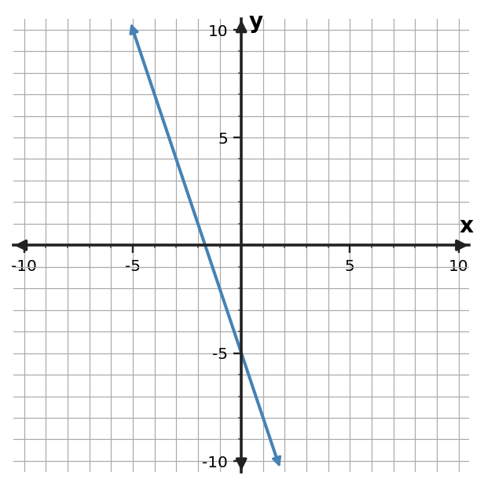

1. Relationship A is $y=3x-5$. Relationship B is shown in the table. Compare their rates of change and starting values.
| $x$ | B: $y$ |
|---|---|
| $0$ | $2$ |
| $2$ | $4$ |
| $4$ | $6$ |
1. Relationship A is $y=3x-5$. Relationship B is shown in the table. Compare their rates of change and starting values.
| $x$ | B: $y$ |
|---|---|
| $0$ | $2$ |
| $2$ | $4$ |
| $4$ | $6$ |
2. Relationship A is $y=-2x+8$. Relationship B is shown in the table. Compare their rates of change and starting values.
| $x$ | B: $y$ |
|---|---|
| $0$ | $-1$ |
| $2$ | $3$ |
| $4$ | $7$ |
3. Relationship A is $y=x-6$. Relationship B is shown in the table. Compare their rates of change and starting values.
| $x$ | B: $y$ |
|---|---|
| $0$ | $5$ |
| $2$ | $13$ |
| $4$ | $21$ |
4. The graphed line is Relationship A. Relationship C is $y=\frac{1}{2}x+4$. Which has the greater rate of change? Compare their starting values as well.

5. The graphed line is Relationship A. Relationship C is $y=2x+1$. Which has the greater rate of change? Compare their starting values as well.

6. The graphed line is Relationship A. Relationship C is $y=-x+3$. Which has the greater rate of change? Compare their starting values as well.

7. Compare the two linear relationships. Use rate and starting value rather than one displayed output.
| A: $x$ | A: $y$ |
|---|---|
| $0$ | $-2$ |
| $2$ | $4$ |
| $4$ | $10$ |
| B: $x$ | B: $y$ |
|---|---|
| $0$ | $6$ |
| $3$ | $3$ |
| $6$ | $0$ |
8. Compare the two linear relationships. Use rate and starting value rather than one displayed output.
| A: $x$ | A: $y$ |
|---|---|
| $0$ | $-4$ |
| $2$ | $-6$ |
| $4$ | $-8$ |
| B: $x$ | B: $y$ |
|---|---|
| $0$ | $7$ |
| $3$ | $13$ |
| $6$ | $19$ |
9. Compare the two linear relationships. Use rate and starting value rather than one displayed output.
| A: $x$ | A: $y$ |
|---|---|
| $0$ | $5$ |
| $2$ | $9$ |
| $4$ | $13$ |
| B: $x$ | B: $y$ |
|---|---|
| $0$ | $-1$ |
| $3$ | $\frac{1}{2}$ |
| $6$ | $2$ |
10. Runner A begins 2 miles from a checkpoint and moves 6 miles per hour. Runner B begins 8 miles from the checkpoint and moves 4 miles per hour. Compare rates and starting values.
11. Service A costs 30 dollars initially plus 2 dollars per month. Service B costs 10 dollars initially plus 5 dollars per month. Compare rates and starting values.
12. Plant A starts at 7 cm and grows 3 cm per week. Plant B starts at 12 cm and grows 2 cm per week. Compare rates and starting values.
13. Relationship A starts higher than B, so a student says A will always have the greater output. Explain what additional information is needed.
14. Two lines have different slopes but happen to cross at one point. A student says they are equivalent because they share that point. Assess the claim.
15. A student compares two tables using only the last displayed output and ignores the input intervals. Explain the flaw.
16. For Relationship A, $y=3x+14$, and Relationship B, $y=-2x+39$, find the input where their outputs are equal and identify which relationship has the greater rate of change.
17. For Relationship A, $y=2x+26$, and Relationship B, $y=4x+20$, find the input where their outputs are equal and identify which relationship has the greater rate of change.
18. For Relationship A, $y=-2x+43$, and Relationship B, $y=x+31$, find the input where their outputs are equal and identify which relationship has the greater rate of change.
19. A relationship is represented by $y=|x-2|$. Identify its function family and give one feature that supports your choice.
20. A relationship is represented by $y=5x-9$. Identify its function family and give one feature that supports your choice.
21. A relationship is represented by $y=(x+2)^2-1$. Identify its function family and give one feature that supports your choice.
22. Using rate and starting value, compare Relationship A, $y=4x+1$, with Relationship B, $y=4x-5$, and state one conclusion supported by those two models.
23. Using rate and starting value, compare Relationship A, $y=2x-6$, with Relationship B, $y=5x+3$, and state one conclusion supported by those two models.
24. Using rate and starting value, compare Relationship A, $y=-2x+10$, with Relationship B, $y=-x+2$, and state one conclusion supported by those two models.